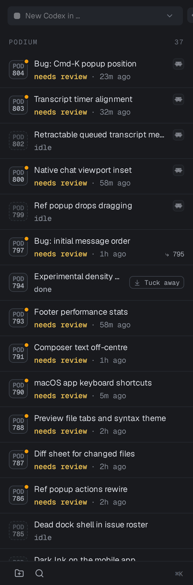
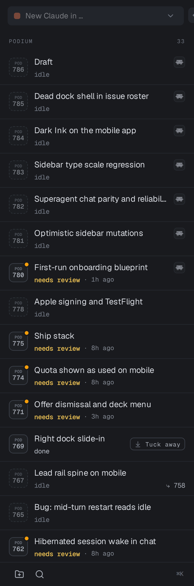

You were right. The macOS polish work from POD-450 was not reverted — its type system survived and grew. What eroded is the discipline around it: the work list's status line dropped from 12px to 10.5px, the issue-ID prefix fell to 6.5px, and sub-floor type tripled across the app. All of it inside one commit that never mentions typography.
Fixed and verified. The work list now has no text below the 10.5px floor — down from 43.4% of its visible text. The status line is back at 12px, the ID square reads at 10.5px including its prefix, and the whole shell's sub-floor share fell from 41.2% to 18.4%. A test now fails the build if any of it drifts again.
Two things I found while fixing and did not silently absorb: the stylesheets carry a further 68 sub-floor rules my original count missed (it only scanned TSX), and the Balanced/Compact question is deferred for your call. Both are itemised below.
| Sidebar role | Before | After | Change |
|---|---|---|---|
| Issue title | 13px | 13px | Untouched — it was already on benchmark |
| Status word + time | 10.5px | 12px | shell-type-micro → shell-type-secondary, and the timer beside it now matches instead of setting its own 10px |
| Queued status ink | 3.87:1 | 5.16:1 | --text-faint → --text-dim; clears AA |
| ID number | 10px | 10.5px | On the floor |
| ID prefix | 6.5px | 10.5px | Recedes by ink now, not by size |
Section label (PODIUM) | 8.5px | 10.5px | label-mono reads the token, so it follows density too |

needs review · 23m ago reads as one 12px phrase, the ID square is legible including its prefix, and PODIUM is a section label rather than a smudge. Compare with the before capture further down.The stylesheet debt is larger than I first reported. My original count of 90 sub-floor call sites scanned only .tsx arbitrary values. styles.css carries a further 68 sub-10.5px font-size rules — that is how label-mono sat at 8.5px without appearing in any count. The real total was 158, not 90. The new test ratchets the CSS number so it can only go down, but the sweep itself is still outstanding.
Balanced density is deferred, not done. Step 5 of the plan — making Balanced meaningfully more generous than Compact — touches 79 shell-type-* call sites and would reverse POD-450's deliberate "the floor is the same in both modes" decision. That is a design change wanting its own visual review, not something to ride along in a regression fix, so it is on the issue's deferred list for you to call.
Question 1 — did POD-450 get lost? No, and yes. The machinery is intact and better than it was: four semantic roles, a fifth added, a density switch, a wider sidebar. The compliance is what regressed. Two specific sidebar values that POD-450 pinned in its own metrics file have moved back down, and 90 call sites app-wide now sit below the 10.5px floor it established.
Question 2 — how does Podium compare? The issue title at 13px is exactly on benchmark with Cursor/VS Code and Orca. Everything under the title is a rung or two below what any reference app uses for the same job. 41% of visible shell text is below 10.5px; the comparable figure in Orca — a denser, more IDE-like peer — is about 10%.
POD-446 audited the shell on 6 August and found microtype was the largest polish gap. POD-450 implemented the fix and landed as 0e3a597, pinning its results in .design/POD-450-balanced-shell-metrics.json. That commit is an ancestor of today's main — nothing was reverted.
| POD-450 deliverable | Status today | Evidence |
|---|---|---|
| Four semantic type roles as CSS custom properties | Intact — and extended | A fifth role, --shell-type-column-title (17px), was added since |
| Balanced / Compact density switch, balanced by default | Intact | readStoredDensity defaults to balanced; live root carries data-density="balanced" |
| Consolidated topbar instrumentation under balanced | Intact | html[data-density="balanced"] rules still present in styles.css |
| Wider sidebar (292px) | Improved — now 306px | Measured live at 306px; rows 54px (was 52px) |
| Reading tier at 14.5px | Improved — now 15px / 25px | Transcript reads as a document |
| Row title at 13px | Intact | Measured live: 13px / 18px |
| Row status line at 12px | Regressed to 10.5px | shell-type-secondary → shell-type-micro |
| Issue-ID label at 10.5px | Regressed — 10px number, 6.5px prefix | Prefix was a same-size span at 72% opacity; now its own 6.5px span |
| 10.5px floor for ordinary text | Eroded — 90 sub-floor call sites | Sub-10px hardcoded sizes went 27 → 90 since POD-450 |
git blame points both at 9837bfd — "make the light theme warm paper, and the stage a sheet on it." That commit is a 44-file theme and geometry rewrite. Its message describes the sheet, the tabs, the spine, the transcript and the mission gauge in detail. It says nothing about shrinking the work list's secondary line or re-sizing the ID square. These were collateral drift inside a large refactor, not a decision anyone recorded.
The same commit is where the erosion happened more broadly: it systematically replaced shell-type-* role classes with hardcoded text-[Npx] values in the dock, the tray and the issue panels — reintroducing exactly the "many local sizes" entropy POD-446 named as the root problem.
Measured from the running app — Chromium at 1440×1000, DPR 3, Superade dark theme, balanced density, from a build of current main.
The last two rows are the whole complaint. needs review is the single most operational word in the work list — it is the app telling you it is waiting on you — and it is set one rung below the app's own secondary role, in the only colour on the ramp that fails WCAG AA for normal text.

idle, needs review · 8h ago — sits at 10.5px in a 3.87:1 grey, and the POD above each number is a 6.5px smudge.The comparison that matters is not "is Podium dense" — it is dense on purpose and that is fine. It is how far the secondary rung sits below the primary one, and where the floor is.
| Product | Primary nav / row title | Secondary / metadata | Practical floor | How that was established |
|---|---|---|---|---|
| Cursor (VS Code fork) | 13px | 13px | 13px | Explorer/sidebar type is hardcoded at 13px in the workbench CSS; list rows 22px. There is no smaller UI tier — metadata dims rather than shrinks. |
| Orca (open source) | 13px | 11–12px | 10px | Measured across ~3,900 size declarations in current main: 12px is the modal size, 11px is heavy, 10px is reserved for badges. Sub-10px is ~1%. |
| Linear | ~13px | 12px | 12px | Published scale bottoms out at caption 12px/400. The 2026 refresh dimmed the sidebar and added vertical padding — it made navigation quieter without making it smaller. |
| Conductor | — | — | — | Native SwiftUI Mac app; no published tokens and no source to inspect, so I have no measured numbers. It inherits macOS control conventions, where 13pt is the standard control size and 11pt the small one. |
| Podium today | 13px | 10.5px | 6.5px | Measured live. Title on benchmark; secondary a rung and a half below every peer; floor far below all of them. |
Two things fall out of this table.
Podium's titles are fine. 13px is precisely where Cursor, Orca and Linear put the equivalent line. No peer sets primary navigation larger. Do not raise it.
The gap between rungs is the defect. Every reference app puts its secondary tier one small step below primary — 13→12, or 13→11, or no step at all. Podium steps 13→10.5, a 19% drop, and then colours the smaller line at 3.87:1. Size and contrast compound, which is why it reads as haze rather than as hierarchy. Linear's refresh is the direct counter-example: faced with the same "the sidebar is too loud" problem, they dimmed it and gave it more air, and left the type size alone.
Steps 1–3 are done and verified; step 4 is filed as follow-up work and step 5 is deferred for your call. The plan is kept below as written so the reasoning behind each step stays readable.
WorkRowShell.tsx:285 — shell-type-micro → shell-type-secondary. That restores 12px in balanced and 11px in compact, and re-satisfies the metric POD-450 pinned.
While there: the status word uses --text-faint (3.87:1). Move persistent row state to --label (6.33:1), keeping the amber attention tint where it already applies.
IdSquare.tsx — prefixSize is currently numberSize × 0.65, which is 6.5px on a 30px desktop square. POD-450's treatment was better and simpler: render the prefix at the number's size and let opacity recede it. Restore that, and return numberSize to 10.5px on squares ≥30px.
POD-446 called the ID at 8.1px "engraved rather than readable". 6.5px is well under the size it condemned.
POD-450 established a 10.5px floor and nothing enforced it, so a large unrelated refactor walked straight through it and no one noticed for six days. Add a unit test that scans apps/web/src/**/*.tsx for text-[<10.5px] and fails with the offending file and line, seeded with an explicit allowlist for the handful of genuinely decorative marks.
This is the step that answers "will it drift again". Without it, the other three are temporary.
Ranked by how often you look at them: AskUserQuestionCard (13 sites), IssueCard (11), MergeQueuePanel (10), IssueActivity (8), MessageLedgerView (5). Each one becomes a shell-type-* class rather than a new local size.
This is also where the allowlist from step 3 gets emptied out — the test starts permissive and tightens as the sweep lands.
Balanced and Compact currently differ by 1px of reading, 0.5px of primary, 1px of secondary and nothing at all at micro. A user who picks Balanced gets almost the same shell. If the density switch is meant to be the answer to "it's too small for me", Balanced should move — secondary to 12.5px and micro to 11px would give it something to be.
9837bfd. The Paper theme and sheet geometry are good work and the rest of that commit should stay. Only the type values it moved need correcting..design/POD-783-live-metrics.json — full computed-style distribution, tokens, contrast and geometry from the running app..design/POD-783-sidebar-today.png, .design/POD-783-shell-today.png — DPR 3 captures of current main..design/POD-450-balanced-shell-metrics.json (in git at 0e3a597) — the baseline these are compared against.e2e/pod783-prepare.ts, e2e/pod783-measure.ts, e2e/pod783-sidebar-crop.ts — the harness, re-runnable against any build.stablyai/orca main on 12 August 2026.